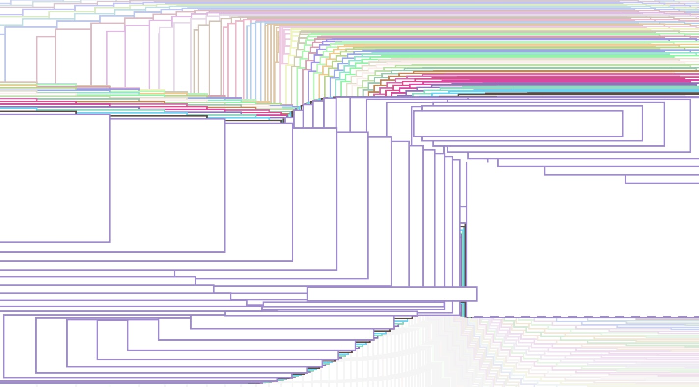
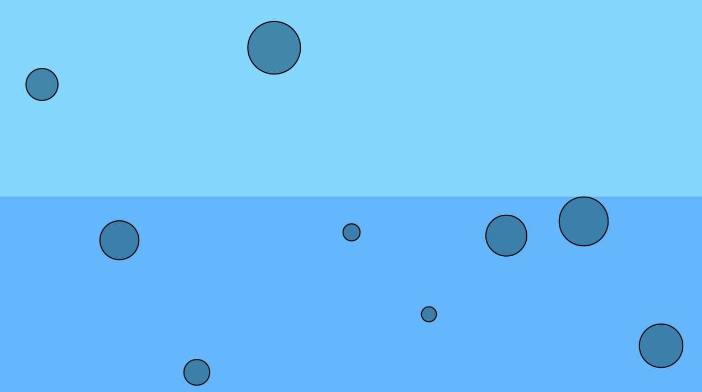

Ngan Tran Project 2

Exercise 3: Lion Family and Friend
In this exercise, I am working on a lion, a character that appears in my notebook, and I created a father lion and a baby lion. I want the lions' faces to be bouncing and wrapping around a canvas.
This is a p5.js creation that I learned and applied in class, such as vector behaviors including both wraparound and bounce mechanics, and child function. The big lion and baby lion exhibit bounce behavior by reversing their velocity when they reach the canvas edges, ensuring smooth and natural movement. They have different speeds of movement, creating a difference and showing the dynamism of the baby lion. The program makes effective use of transform functions such as `translate()`, `rotate()`, and `scale()` to position, rotate, and resize the lions dynamically. The big lion and baby lion act as parent functions, each composed of multiple child functions to define their distinct features. The project introduces two variations of the lion, with the baby lion using a different mane and eye style, amplifying customization. Nested transform tools (`push()` and `pop()`) isolate transformations and ensure clean organization.
I borrowed the Creature by Sean Yagi, Thomas, so I could add other characters to appear in my exercise. Thomas is a cute character. His detailed design features articulated limbs, facial expressions, and even a propeller hat, adding charm and personality to the character. I really like this character and thanks Sean for sharing Thomas with us!

Excercise 4: Bear Planes
I made a few changes to my character from exercise 3 and transformed it from a lion to a brown bear with a brown tail. This was a difficult exercise for me because the Bear class in another file will affect the main sketch a lot, so when editing, both sides are related to each other.
The `ntBear` class includes a constructor for initializing attributes such as position, color, rotation, and size. The parent `displayBear()` function calls child functions like `tail()`, `ear()`, `head()`, `eye()`, `nose()`, `cutiecheek()`, and `leg()` to construct the bear’s full appearance. Transform tools such as `push()`, `pop()`, `translate()`, `rotate()`, and `scale()` is used to control the position, orientation, and size of each lion instance on the canvas. The `updateBear()` method handles vector-based movement and bounces behavior when the bears reach the canvas edges. The project demonstrates interactivity through the `keyPressed()` and `mousePressed()` functions, which alter movement speed, color patterns, and positioning in response to keyboard and mouse input in sketch.js. The results from the exercise were interesting to me, I also enjoyed and learned more knowledge.
Run Exercise 4
See code for Exercise 4
See the second code for Exercise 4
Project 2 Video: Over the Sea
In Project 2, I took inspiration from the beach to create the waves and the steam rising from the sea surface. The algorithms that I used in the project were Parametric Equations and Forces to make the difference and the effect of the sea surface. The background I chose was white and will change in the third act when the effect of water evaporation appears. This is the first time I used existing codes and made my work unique. It was a bit difficult to start with, because their codes were completely finished and beautiful, and I did not want to change them. I used two codes that I thought I could tweak and change to my liking. I think I'm happy with my final video, the special effects when recording, and using the space key to make the video more unique.
In addition, I also added sound to create creativity and create the feeling like you are at the beach and hear the sound of waves lapping in your ears.
Run Project 2
Code for Video Project 2
See the Group Project 2 Slide


Project 2 Final Video

{kind=link}
{kind=link}
{kind=link}
Algorithm Sources
Parametric EquationsForces